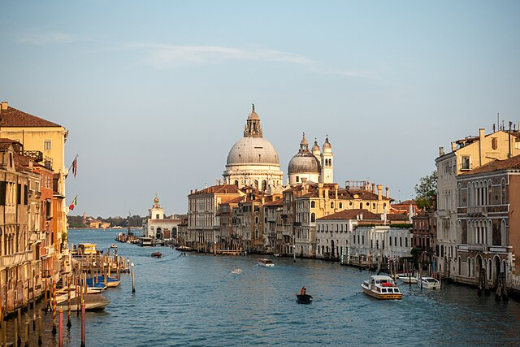
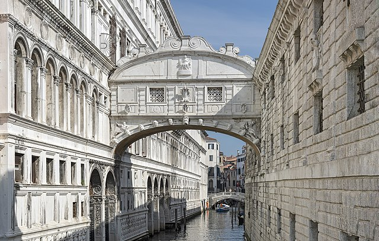
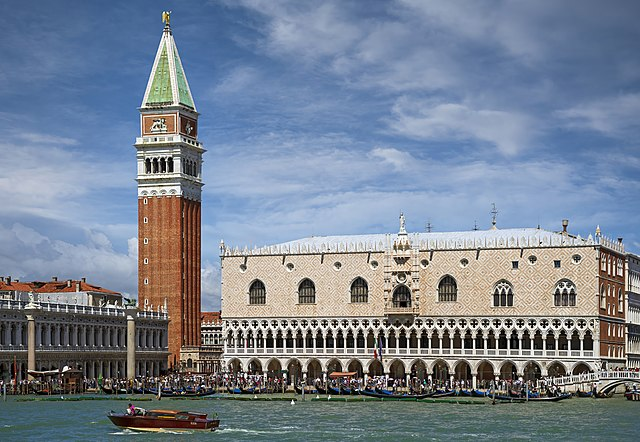

Nestled in the heart of Italy, Venice, often referred to as the "City of Water," enchants visitors with its labyrinth of picturesque canals, stunning architecture, and rich history. As you glide through the serene waterways in a traditional gondola, the melodious sounds of the city create a romantic ambiance. Stroll along the cobblestone streets, marveling at the intricate facades of the Doge's Palace, and indulge in authentic Venetian cuisine at charming trattorias.
The Bridge of Sighs is a striking work of architecture that connects the Doge's Palace to the prison. Built in the early 17th century, the bridge is named for the sighs of prisoners who crossed it, catching their last glimpse of the beautiful city before being confined. Constructed from white limestone, it features intricate details and arched windows, displaying the city's artistry and complex history.
The Doge's Palace, or Palazzo Ducale, is a remarkable masterpiece of Gothic architecture located in Venice, Italy. Once the residence of the Doge, the head of state of the Venetian Republic, this iconic building is celebrated for its intricate exterior adorned with pink and white marble, delicate traceries, and grand arches. Inside, the palace features opulent rooms, including the magnificent Sala del Maggiore Consiglio, adorned with breathtaking frescoes and artworks by renowned artists like Tintoretto and Veronese. The palace is not only a symbol of Venice's political power, but also a testament to the city's rich history, making it a must-visit for anyone exploring the canals of this enchanting city.
